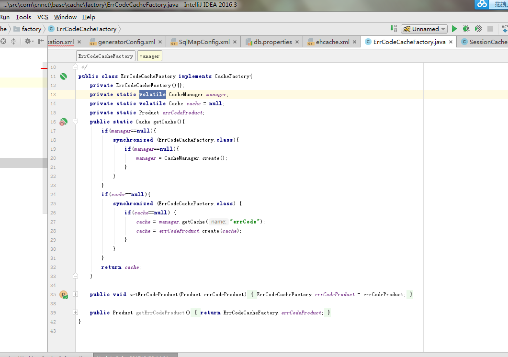
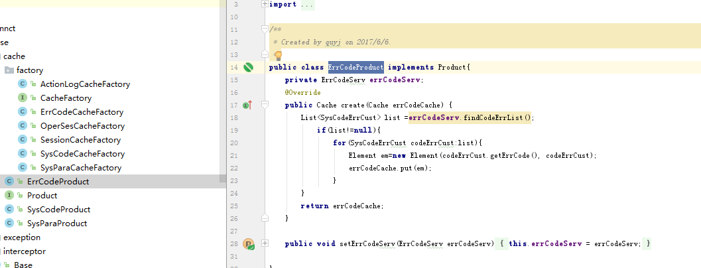
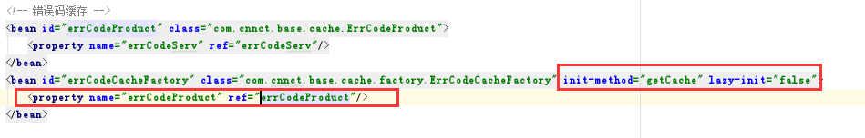
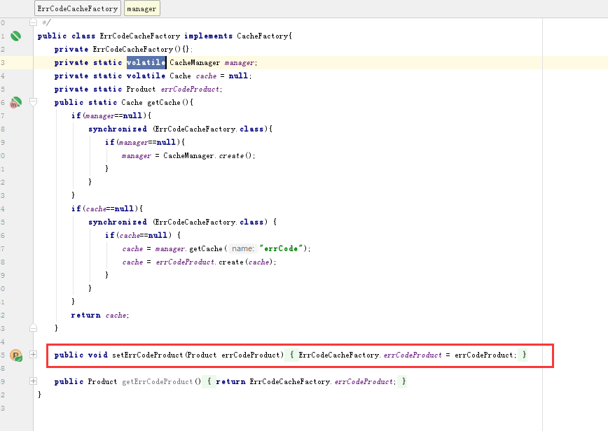
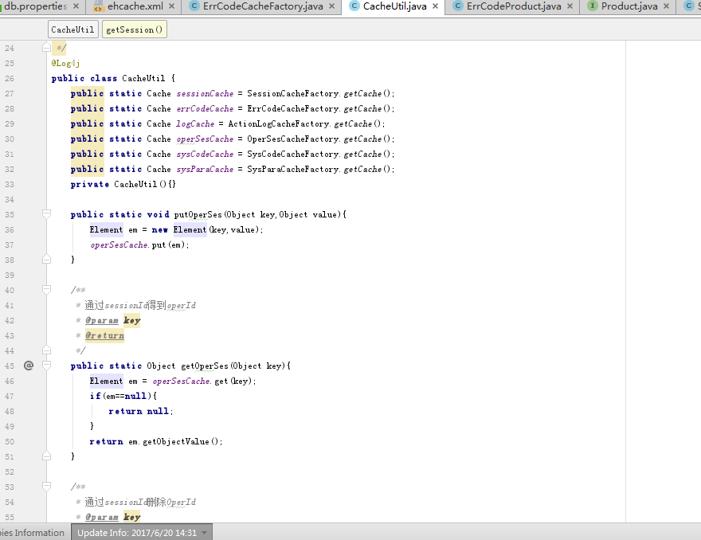

src/ehcache.xml配置说明
该配置文件是对Ehcache缓存的配置，具体用法如下
注意：负载均衡时的配置，重点看看ehcache.xml里的注释说明。本例仅只测试了双机环境，若是超过两台服务器环境时，还未尝试，可自行研究一下。
<ehcache xmlns:xsi="http://www.w3.org/2001/XMLSchema-instance"
xsi:noNamespaceSchemaLocation="http://ehcache.org/ehcache.xsd"
updateCheck="true" monitoring="autodetect"
dynamicConfig="true">
<!-- ================负载配置开始=============== -->
<!--
除配置本段两个Factory节点外，还需要在各子缓存的结点中增加cacheEventListenerFactory，详见sysPara示例配置部分
共分为①、②、③，共三处配置
负载配置①：配置对方缓存服务信息
peerDiscovery：atutomatic自动，manual手动，本例使用manual
rmiUrls：对方缓存服务url，本例中只是以sysPara为例，若是多个url时，中间用|竖线分隔即可
timeToLive 搜索某个网段上的缓存：0是限制在同一个服务器，1是限制在同一个子网，32是限制在同一个网站，
64是限制在同一个region，128是同一块大陆，还有个255
!!!!!特别注意，我在本机测试两个tomcat时，一直不生效，后来加上timeToLive=0，即生效
-->
<!-- <cacheManagerPeerProviderFactory -->
<!-- class="net.sf.ehcache.distribution.RMICacheManagerPeerProviderFactory" -->
<!-- properties="peerDiscovery=manual,timeToLive=0,rmiUrls=//127.0.0.1:40001/sysPara"/> -->
<!-- 负载配置②：配置本地ip，端口
hostName：主机名或者ip
socketTimeoutMillis:同步超时时间
-->
<!-- <cacheManagerPeerListenerFactory -->
<!-- class="net.sf.ehcache.distribution.RMICacheManagerPeerListenerFactory" -->
<!-- properties="hostName=127.0.0.1,port=40002,socketTimeoutMillis=2000"/> -->
<!-- ================负载配置结束=============== -->
<!--
name:缓存名称。
maxElementsInMemory：缓存最大个数。
eternal:对象是否永久有效，一旦设置了，timeout将不起作用。
timeToIdleSeconds：设置对象在失效前的允许闲置时间（单位：秒）。仅当eternal=false对象不是永久有效时使用，可选属性，默认值是0，也就是可闲置时间无穷大。
timeToLiveSeconds：设置对象在失效前允许存活时间（单位：秒）。最大时间介于创建时间和失效时间之间。仅当eternal=false对象不是永久有效时使用，默认是0.，也就是对象存活时间无穷大。
overflowToDisk：当内存中对象数量达到maxElementsInMemory时，Ehcache将会对象写到磁盘中。
diskSpoolBufferSizeMB：这个参数设置DiskStore（磁盘缓存）的缓存区大小。默认是30MB。每个Cache都应该有自己的一个缓冲区。
maxElementsOnDisk：硬盘最大缓存个数。
diskPersistent：是否缓存虚拟机重启期数据 Whether the disk store persists between restarts of the Virtual Machine. The default value is false.
diskExpiryThreadIntervalSeconds：磁盘失效线程运行时间间隔，默认是120秒。
memoryStoreEvictionPolicy：当达到maxElementsInMemory限制时，Ehcache将会根据指定的策略去清理内存。默认策略是LRU（最近最少使用）。你可以设置为FIFO（先进先出）或是LFU（较少使用）。
clearOnFlush：内存数量最大时是否清除。
-->
<!-- syspara缓存 ,暂定永不失效 -->
<cache name="sysPara"
maxElementsInMemory="10000"
overflowToDisk="false"
eternal="true"
timeToIdleSeconds="0"
timeToLiveSeconds="0"
memoryStoreEvictionPolicy="LRU"
transactionalMode="off"
>
<searchable keys="true"/> <!--可以根据Key进行查询，查询的Attribute就是keys-->
<!-- 负载配置③：配置RMI，非负载配置可注释 -->
<!-- <cacheEventListenerFactory class="net.sf.ehcache.distribution.RMICacheReplicatorFactory"/> -->
</cache>
name不能重复，用于Ehcache的缓存名称。一般memoryStoreEvictionPolicy都设置为LRU（最少使用），以session为例
timeToIdleSeconds="1800" --闲置30分钟失效
timeToLiveSeconds="0" --默认对象只要在使用就永不失效
程序中使用：
在src.com.cnnct.basic.cache.factory目录下
创建以ehcache.xml配置文件中配置的name 名称开头，CacheFactory结尾的缓存工厂类，实现CacheFactory接口，

重写getCache方法，manager.getCache("")中写入ehcache.xml中对应的cache的name，如果需要初始化的时候在cache中加入值，name需要在cache目录下创建Product结尾的文件
例如：

并实现Product接口，重写create方法。并在application-service.xml中配置service
例（红框的是重点）：

并在对应的cache工厂类方法中提供对应的set方法，在set方法中，赋值给静态对象。
例：

因为， Ehcache的使用需要创建 Element，对Element对象进行操作，在程序中操作不是很方便。name在utils下的CacheUtil中，可以添加get，put，remove等方法
例：
